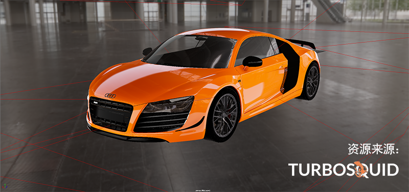

若要将灯光添加到场景中，请从“创建 > 灯光”(Create > Lights)菜单中选择此灯光，然后从“属性编辑器”(Attribute Editor)调整属性，例如强度和颜色。或者，也可以从灯光编辑器(Light Editor)创建灯光，并直接在编辑器中调整和定位灯光。如果使用的是 Arnold for Maya 渲染器，则除了 Maya 灯光外，还可以将 Arnold 灯光添加到场景中。
像对象一样定位灯光，或使用灯光操纵器交互式放置灯光。若要相对于场景中的对象轻松调整灯光位置，请选择灯光，然后从面板菜单中选择“面板 > 沿选定对象观看”(Panels > Look Through Selected)或单击“灯光编辑器”(Light Editor)中的  。
。
默认情况下，Maya 视口使用平行光照亮场景，以便您可以看到对象。这称为默认照明模式（面板菜单中的“照明 > 使用默认照明”(Lighting > Use Default Lighting)）。若要查看所创建灯光的效果，请按 7 键或选择“照明 > 使用所有灯光”(Lighting > Use All Lights)。
默认情况下，灯光和对象都会投射和接收阴影。若要在视口中查看阴影，需要启用“照明 > 阴影”(Lighting > Shadows)。还必须启用“照明 > 使用所有灯光”(Lighting > Use All Lights)才能查看阴影。
如果使用的是 Arnold for Maya 渲染器，还可以通过创建天顶灯光在场景中添加环境照明。例如，可以将其与 HDR 图像一起使用，以使用纹理文件照亮场景。